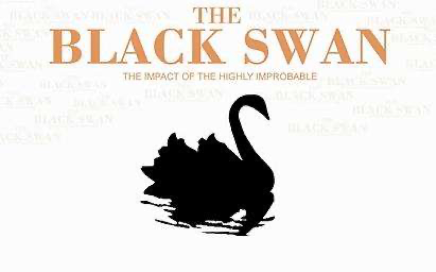

收录于合集

编者按
美国自特朗普执政以来接连不断的“退群”操作令世界哗然。在传统的以理性主义和国家主义为中心的国际关系及国际政治经济学的理论框架下，从特朗普的上任，到美国退出TPP，都是一次次“黑天鹅”事件，本文运用新葛兰西主义理论，从“常识”角度出发，指出美国（新）自由化的停滞甚至倒退，并非“黑天鹅”，而只是“灰犀牛”。
1.“黑天鹅”效应（Black Swan Theory）
“黑天鹅”效应一般用于比喻一些无法预测的事件，这些事件超出了通常情况下的预期，并有潜在的严重后果。在18世纪欧洲人发现澳洲之前，由于他们所见过的天鹅都是白色的，所以在当时欧洲人眼中，天鹅只有白色的品种。直到欧洲人发现了澳洲，看到当地的黑天鹅后，之前的认知便被完全推翻。美国著名投资人塔勒布（Nassim Nicholas Taleb）给出了“黑天鹅”事件的三个特性：稀缺性、极端的“影响力”和可追溯的可预测性。例如，2008年金融危机期间美国房地产市场的金融崩溃便是最著名的黑天鹅事件之一。

2.“灰犀牛”(The “Grey Rhino”)
“灰犀牛”事件是指太过于常见以至于人们习以为常的风险，比喻大概率且影响巨大的潜在危机。灰犀牛体型笨重、反应迟缓，即使人们能看见它在远处，却毫不在意，但当它向人们奔来造成危险时，再去反应为时已晚。美国学者米歇尔·渥克（Michele M. Wucker）在2013年首次提出了这一概念，并在其2016年出版的《灰犀牛：如何应对大概率危机》（ The Gray Rhino: How to Recognize and Act on the Obvious Dangers We Ignore ）一书中做出进一步阐释。《纽约时报》2017年的一篇文章中指出，中国商业中高负债的巨头企业，便是威胁中国经济的“灰犀牛”。
作品简介
【作者】 Rubrick Biegon，肯特大学国际关系讲师
【编译】 张曼娜（国政学人编译员，吉林大学公共外交学院）
【审核】 贺凡熙
【校对】 刘潇昱
【排版】 高佳美
【来源】 Rubrick, B. (2020). US Hegemony and the Trans-Pacific Partnership: Consensus, Crisis, and Common Sense. The Chinese Journal of International Politics,13 (1), 69-101, https://doi.org/10.1093/cjip/poaa001

期刊简介
The Chinese Journal of International Politics（《中国国际政治杂志》）成立于2006年，主编是孙学峰，是由牛津大学出版社每季度出版的经同行评议的学术期刊，以现代方法论为基础研究国际关系，也发表历史研究和政策导向的论文。该期刊大部分文章或与中国有关，或对中国的外交政策有影响。
【霸权研究】美国霸权与跨太平洋伙伴关系：共识，危机与常识
US Hegemony and the Trans-Pacific Partnership: Consensus, Crisis, and Common Sense

文章导读
2016年由美国领导谈判并敲定的跨太平洋伙伴关系协定（Trans-Pacific Partnership, TPP）本有望成为全球最大的贸易协定，然而美国于2017年1月退出该协定，随后其余的11个国家决定继续推进修订后的协定，并改名为“全面与进步跨太平洋伙伴关系协定”（Comprehensive and Progressive Agreement for Trans-Pacific Partnership ，CPTPP）。该制度无法预测的起起落落表明，无论美国是否参与，世界贸易都将进一步（新）自由化。
本文认为，TPP是美国霸权在世界经济中的一个工程，而美国退出该协定是其霸权危机的征兆。本文对美国在TPP中的作用进行了批判性分析，运用新葛兰西主义的理论方法凸显构成美国霸权的多种权力形式，同时认可驱动美国政策的基于阶级的利益。本文从美国外交政策的角度审视了该协定的战略和地缘经济目标，将美国的退出置于上下文语境中，最终得出结论：美国退出TPP代表了一场危机，对精英阶层在贸易和全球化方面的“常识”提出了广泛的挑战。
新葛兰西主义（neo- Gramscian）的霸权观是一个辩证的社会过程，需要结合“自上而下”和“自下而上”的因素进行考虑分析。在查阅了一系列官方声明、文件和政策报告，参与了有关TPP的广泛政策讨论，并大量使用了维基解密公布的外交电报后，作者认为，在霸权共识的构建中，重要的是精英“常识”与大众“常识”的共鸣。
01
论危机与常识: 美国霸权的新葛兰西主义路径
本文建立在国际关系与国际政治经济学的新葛兰西主义路径基础上。考克斯（Robert W. Cox）由物质能力、观念、制度构成的霸权三角模型代表着从过度的集权主义走向霸权的重要一步。而新葛兰西主义的共同主题是：美国权力与日益全球化的资本主义密不可分。至于美国放弃对TPP的管理这一谜题，考克斯式的批判性观点一般会将问题焦点放在阶级动态上。
首先，针对霸权，新葛兰西主义认为霸权是一种多层面、多层次的社会关系（social relationship）。霸权将强权、共识与意识形态合法化融合在一起，以跨越国际关系的结构、制度与话语。这一体系并非是单向的，其内在的辩证允许从属的力量去反抗主导行为体认可的共识。本文着重讨论的美国霸权，其所求与TPP的战略价值、TPP与美国权力的关系，以及特朗普退出的影响密切相关。美国的外交政策的合法化通常借助一种研美学者的意识形态，这种意识形态强调自由主义（精英和大众）的“常识”诉求，同时强调例外论概念。
其次，关于常识，在葛兰西看来，常识意味着“传统的”和/或“大众的世界观”。如果得到了很好的平衡，常识能够将大众的道德观与统治阶层的意识形态相结合，产生所谓“国民大众”（nationalpopular）的观点。然而大众常识的转变也可能破坏霸权，创造危机条件，迫使占主导地位的集团利用其他形式的权力来维持其结构优势。
最后，关于霸权危机，考克斯以布雷顿森林体系危机为例，认为霸权主义的衰落表现为促进具体利益的单边主义倾向。然而作者认为，在具体的霸权主义危机中，考克斯忽视了自下而上的和“日常”的因素。例如北美自由贸易协定（ NAFTA）与世界贸易组织（WTO）期间美国两党新自由主义与各类反全球化组织之间的斗争，就代表新自由主义全球化的反弹，造成了有关自由贸易的常识共识的裂缝。葛兰西用“有机危机”（organic crisis）一词来描述霸权秩序全面崩溃的概念，在这种秩序中，由于随之而来的“权威危机”（crisis of authority），统治阶级难以维护自己的意志，从2007-2009年金融风暴以及随之而来的一系列崩溃中可窥见一斑。在解释危机的偶然性时，作者利用建构主义与国际政治经济学对新葛兰西主义进行补充。虽然精英思想构成了维持和/或扩大霸权关系的具体政策，但这些思想需要找到与大众/大众常识的持续共鸣，而物质冲击可以“打破”这种共鸣。2007—2009年金融危机和“大衰退”（Great Recession）之后“民粹主义”（populism）的繁荣对“建制派”（the establishment）的常识性思维提出了挑战：反霸权可以采取一种更为日常的形式，不仅表现在有组织的社会运动中，还可以表现在日常生活中更为习以为常的方面。
02
关于自由贸易的精英共识
上世纪90年代和本世纪头十年的全球化辩论中的新葛兰西主义对于“华盛顿共识”（Washington Consensus）的共识特征的问题化至关重要。作为一种打造和推动新自由化的手段，自由贸易得到了美国两大政党和外交政策建制派的大力支持。美国所倡导的这种基于规则的政治合作与基于开放的经济交流的贸易政策被认为是“自由秩序建设”过程的关键，而北美自由贸易协定、世界贸易组织和亚太经合组织论坛（APEC）的建立是这一议程的基石。然而持批评态度的学者认为，贸易自由化与“华盛顿共识”的其他政策的相互关联，意味着自由贸易不仅使美国在国家意义上受益，美国国内的某些精英群体也会从中受益。
2001年多哈回合谈判的破裂所展现的“新兴大国”（rising powers）的重要性以及亚太经合组织与美洲自由贸易区谈判过程中出现的一系列问题使得美国希望TPP能够一定程度上弥补上述贸易协定的缺陷。但是华盛顿对自由贸易的承诺有时也会遭到包括美国国内的反全球化群体的质疑。从一开始微不足道的影响，到2007—2009年金融危机后公众态度的明显转折，2010年，美国自由贸易协定的支持率处于13年来的最低点。尽管奥巴马在危机期间的政策发生了一些变化，但美国外交经济政策仍旧保持着相当的连续性，并得到了精英势力网络与公司资本的支持，必须从这个角度来看待奥巴马政府对TPP的构建。
03
一个霸权工程：TPP与美国战略
霸权工程可以理解为霸权国运用构成霸权的一个或多个维度的权力来增强其不对称优势的政治努力。TPP与奥巴马政府“重返亚洲”（the “pivot”）战略密切相关，该战略后来改名为“再平衡”（the “rebalance”），也是为了增强美国的战略目标感。此举使得美国将资源重新集中于东亚和太平洋地区，以更好应对中国的持续崛起。
瞄准中国
美国建立TPP一个明确的地缘政治目标便是削弱中国在亚太地区日益增长的经济影响力，这是该协定的“现实主义”面。分析人士指出，亚太地区出现了一场“模板之争”，中美竞相为其最强大的部门建立改善贸易条件的机制。因此，TPP的关键就在于排除中国，使得美国能在重要方面拥有掌控权。而该协议的最大目标是使美国纵横亚欧，制定下个世纪支配全球经济的规则。中国2012年推出的区域全面经济伙伴关系协定（RCEP）被视为TPP的一个明显替代品。中国政府所主张的规则排除了对美国商业贸易行业至关重要的服务与条款，即使宣称对美国开放，也对美国毫无益处。而2013年启动的“一带一路”等倡议也使得中国的地缘经济战略的到了强化。
首先，美国对于将中国纳入TPP的可能性的态度模棱两可。一方面，奥巴马暗指TPP是推动中国采纳国际标准的一种方式；另一方面，这也取决于中国是否愿意参加一个由美国主导的全面机制。中国方面并没有明确表示加入TPP的意愿，但有资料显示中国官员认为中美之间对于区域架构发展几乎没有分歧。美国方面则认为中国利用现有架构削弱了美国的影响力。
其次，争取其他东亚国家的参与对TPP的战略目标至关重要。美国对马来西亚、越南和日本都进行了游说，日本在犹豫后与2016年12月批准了该协定。中国的亚太经合组织成员身份是“重返亚洲”战略的眼中钉，而TPP便旨在遏制中国在东亚政治经济中日益增长的影响力。同时也有东盟官员对TPP对该地区的经济结构的塑造作用表示认可。TPP也被认为能够将东亚与拉丁美洲相连接，以应对中国在美国“后院”的“崛起”所带来的影响。甚至还有人猜测TTP与跨大西洋贸易与投资伙伴协定（TTIP）合并的可能性。
书写新自由主义的贸易规则
与以往美国支持的自由贸易协定一样，TPP旨在推进参与经济体广泛但有选择的自由化。尽管奥巴马政府声称TPP代表了“新”的东西，但是它仍为旧的新自由主义议程服务。TPP为美国提供了绝佳机会，无论有没有中国，美国都能建立起其希望在亚洲实施的那种制度。早些时候美国官员曾得出结论：推进自由化需要一个全新的架构，这也是布什政府和奥巴马政府达成的两党政策共识。
从一开始，TPP随着时间推移而扩大的能力就极其重要。TPP的设想是协定能够随势而动，而且其不仅在范围上比WTO更广，在某些方面也比美国所签订的双边自由贸易协定（FTA）更有野心。从美国政策制定者的角度来看，TPP的效用部分取决于它取代和/或吸收成员国之间现有协议的潜力。然而在必要的体系架构上，一方面美国希望维持现有的自由贸易区市场准入时间表，但是美国在双边协议中一贯不愿意公开谈判的条款会在TPP谈判中被削减，因此，美国不得不与没有与其签订自由贸易协定的TPP伙伴国谈判新的市场准入时间表。同时，其他参与国坚持认为，共同的市场准入时间表将更好地解决义务重叠和时间尺度冲突带来的“面条碗”效应。
美国在TPP中扮演设计师的角色，利用其在全球经济中的结构性权力向美国资本的主要利益集团开放这一进程，而它们负责游说工作，其中涉及金融服务部门、电子商务公司、硅谷公司以及制药业、农业等多个行业。而从硅谷公司开始，到一些大型的跨国公司，都开始利用其日益增长的政治影响力直接影响TPP规则。除此之外，一些行业和咨询集团以及律师事务所也开始介入谈判过程。
为进一步自由化造势
为了在全球范围内实现资本积累，新自由化机制对于更大规模的商品和服务交换十分必要。新的协议必须涉及新的商业领域，必须“开放更多的市场”，消除贸易壁垒。与以往的自由贸易协定一样，TPP的目的也是促进资本积累和流动，并选择了跨国资本集团所感兴趣的领域。
TPP起源于布什的竞争性自由化框架，与奥巴马的“重返亚洲”战略完全吻合。在制度上，它旨在随着时间的推移吸引更多的国家，并为自由化创造进一步的动力。美国将TPP视为推进新的世贸组织附加规则的一种手段，美国合作伙伴将TPP视为“将美国牢牢‘锁定’在该地区的一种方式”，这一目标在全球金融危机期间和之后随着中国的持续增长而凸显出来。TPP的支持者将其视为推动像越南这样的成员国进行“关键的内部改革”的“催化剂”。另一方面，投资者与国家争端解决机制(Investor- State Dispute Settlement ，ISDS)在很大程度上引发了政治上对TPP的反对，导致其止步不前，然而美国仍声称将会采取更加强劲的ISDS机制规则。
最终敲定(但未获批准)的TPP反映了美国最初的优先事项：“跨领域问题”，如“供应链管理、竞争力、透明度、监管一致性、劳工与环境、发展和中小企业”，以及针对“境内监管壁垒”的相应规则。此外，草案还限制了资本控制。批评人士认为，尽管金融危机中“有毒金融衍生品”（toxic derivatives）的问题十分突出，但TPP仍将规定TPP国家有义务允许新的金融产品和服务在其他TPP国家允许的情况下进入其经济体。另外，TPP的数字媒体保护措施对互联网治理的影响以及对药品专利的保护可能会导致发展中国家无法获得仿制药，加上ISDS机制等特点，遭到了各地“民粹主义”团体的公开反对。从大众常识角度来看，这一现象使协议陷入困境，同时削弱了支持该协议的精英共识。
04
在自由贸易问题上破裂的共识
数十年来，自由贸易一直是美国霸权的基石，通过华盛顿共识，自由贸易与去监管化、私有化和金融化的新自由主义政策紧密相连。从2000年代中期美洲自由贸易区（FTAA）的破裂，到2008年的金融危机进一步削弱对“自由市场”政策的支持，两党自由化共识逐渐走向破裂。
作者认为，新葛兰西主义国际关系/国际政治经济可以将把华盛顿共识的瓦解所带来的危机时刻与全球资本主义的内部矛盾联系起来。然而这一瓦解过程漫长而又间接，不断地通过公众舆论的转变来调节。鉴于经济大衰退、贸易逆差不断增加以及制造业就业岗位持续流失，自由贸易的常识逐渐受到质疑。美国政府在TPP成员国对其在扩大协议方面的期待与国内日益高涨的反对呼声间进退两难。
在来自不同政治角色的巨大压力下，TPP成为了2016年美国总统大选的一个重要议题。对该协议的审查进一步削弱了公众的支持，从而在政治上损害了其前景。在精英阶层就TPP的可取性展开辩论的同时，普通阶层对自由贸易的敌意也越来越大，助推反全球化情绪转化为一个突出的选举议题。
05
特朗普、TPP和2016年美国总统大选
“大衰退”之后，美国民众在贸易和对外经济政策上始终存在的分歧不断扩大。2016年大选突显出来自各个方面反对自由贸易的“民粹主义”势力正迅速壮大，而贸易政策问题对后工业化的“摇摆州”（swing states）尤为重要。对贸易自由化的反对不仅推动了这些“局外人”的崛起，也促使两党主要对手在贸易问题上更加明确，一向支持TPP的希拉里·克林顿（Hillary Clinton）也被迫在2016年大选中站出来反对TPP。
在贸易和经济全球化问题上，美国政界和广大公众之间存在着巨大分歧。调查显示美国政界有着明确的国际主义观点，而民众对经济全球化持怀疑态度，并且表现出对美国世界地位认知的不确定性。特朗普的个性化“行动”与茶党（Tea Party）的新孤立主义融合，几十年来两党对多边自由贸易的承诺被“经济民族主义”（economic nationalism）所取代。从北美自由贸易协定的重新谈判，到与中国著名的“贸易战”，再到威胁退出WTO，特朗普的“美国优先”（America first）议程在贸易领域愈演愈烈。
作者认为，尽管特朗普的个人特质，例如他个人对奥巴马的反感以及对贸易保护主义的坚定信仰对美国外交以及经济政策确实有所影响，但是这种影响可能被夸大了。特朗普对TPP和北美自由贸易协定的构陷只是利用了民粹主义者的常识。特朗普的民粹的重商主义必须与美国工人阶级的“民间”常识中已经（重新）出现的广泛的反全球化情绪一起理解。退出TPP时白宫发表的声明中对工人的常识性呼吁植根于一种明确的民族主义意识形态，对自由主义和国际主义等精英共识提出了挑战。而这种“为促进特定利益而采取单边主义的倾向”正是考克斯认为的霸权主义衰落的证据。
06
结论
TPP很大程度上是由美国创建的，美国本打算将之作为一种（新）自由化的催化剂以支撑美国战后霸权的结构性优势，并作为对中国贸易竞争的回应。尽管特朗普政府退出TPP的决定本身并不意味着新的国际贸易秩序正在形成，但特朗普的新重商主义确实“挑战了国际贸易规范秩序的稳定性”。传统的国际关系/国际政治经济学角度无法理解这一行为，而本文提出了一个批判性的观点，将巨额贸易交易与阶级、意识形态和非精英阶层自下而上的行动联系起来，为TPP的起源提供了另一种理解：TPP是一个霸权工程。
美国退出之后，修订后的TPP似乎又为贸易自由化重新造势，然而美国最终无力执行最初的协议，说明了其霸权危机，而这也为中国的贸易治理模式在亚洲和其他地区打开了大门。而美国对“TPP11”的去留则不仅取决于其内部贸易政治的深刻转变，也取决于大众对全球化的常识理解。需要重建更广泛的共识。
虽然精英思想构成了霸权的具体政策，但这些思想需要与非精英群体产生共鸣。“常识”是霸权的一个被忽视的重要特征。大众的自下而上的拒绝会采取更为折衷且日常的表达方式，而造成意想不到的新的矛盾，由此造成的混乱可能会加剧结构性的“有机”危机，TPP便是例证。
译者评述
新千禧年初期，学者们提出了一个问题：“21世纪将在多大程度上与20世纪相似或有所区别？”20世纪被称为“美国的世纪”，美国在政治、经济、科技以及文化等各个方面都在世界绝对领先，21世纪以来的（新）自由化与全球化的重重受阻，到近年来美国愈演愈烈的单边主义趋势与中国的不断崛起，新世纪的发展方向越来越难以把控。近几十年，国际政治经济学主要分化为自由主义、马克思主义与现实主义三大流派。新葛兰西主义是近年来在西方兴起的国际政治经济学流派，其渊源于意大利马克思主义者葛兰西（Antonio Gramsci）的学说。20世纪末期，罗伯特·考克斯先后在《千禧年》( Millenium )杂志发表了两篇学术论文，并借此开创了国际关系学与国际政治经济学的新葛兰西学派传统。新葛兰西主义的霸权理论强调历史与阶级动态，强调强权、共识与意识形态的合法化，对传统的现实主义“国家中心论”进行了批判。
在TPP的案例中，本文作者指出大众阶层（美国及其他国家民间的反全球化力量与民族主义倾向）与精英阶层（民粹主义领导人与“美国优先”理念）共同造就了美国不断地走向单边保护主义的结果，而这一结果便是美国霸权危机的表现，为当今国际关系的吊诡给出了相对合理的解释。但是另一方面，本文从地缘政治的角度出发，以中美在亚太地区的地缘政治经济博弈为切入点分析美国退出TPP的后果稍显狭隘。
审核者观点
首先，关于“民粹主义领导人”的说法，按照民粹主义的形成和诉求，民粹主义者是反体制的，但是民粹领导人的出现和体制内的参与又与民粹主义本身相矛盾，更多程度上，特朗普是采取了一些有民粹主义倾向的手段。
其次，从美国的同盟关系角度上来看，为何在特朗普时期美国频频的不利于同盟的行为之下，盟友仍然维护美国的霸权呢？这样的情况下美国的霸权危机是真正意义上的霸权危机吗？还只是说本文更强调的是全球民粹主义浪潮的影响呢？
参考文献：
[1]Taleb, Nassim Nicholas (2010). The Black Swan: the impact of the highly improbable (2nd ed.). London: Penguin. ISBN 978-0-14103459-1.
[2] Jim Chappelow (2020, March 11). Black Swan. Retrieved June 7, 2020, from https://www.investopedia.com/terms/b/blackswan.asp.
[3] Keith Bradsher and Sui-Lee We ( 2017, July 24). In China, Herd of ‘Gray Rhinos’ Threatens Economy. The New York Times. Retrieved June 7, 2020, from https://www.nytimes.com/2017/07/23/business/china-economy-gray-rhinos.html
[4]Tom Chodor (2019): The rise and fall and rise of the trans-pacific partnership: 21st century trade politics through a new constitutionalist lens, Review of International Political Economy , DOI: 10.1080/09692290.2018.1543720
[5]王铁军. (2000). 新葛兰西主义对国际关系理论的创新. 欧洲(01) , 14-19.
[6]詹姆斯·多尔蒂. (2003). 争论中的国际关系理论. 世界知识出版社.483-484.
本文由国政学人独家编译推荐文章观点不代表本平台观点

**** 添加 “ 国小政” 微信，获取最新资讯 ****
**
**

好好学习，天天“在看”
国政学人
支持学术公益与知识传播
微信扫一扫赞赏作者 __赞赏
已喜欢，对作者说句悄悄话
取消 __
发送给作者
发送
最多40字，当前共字
上一页 1/3 下一页
长按二维码向我转账
支持学术公益与知识传播
受苹果公司新规定影响，微信 iOS 版的赞赏功能被关闭，可通过二维码转账支持公众号。